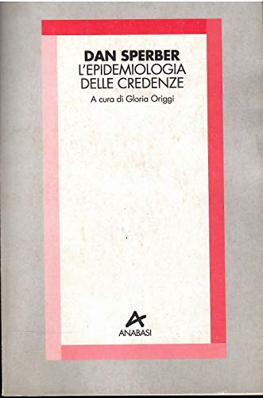
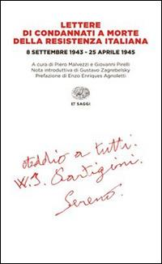

37:17 · 3 OPERE
Il voto come favore.
Il filo del discorso
Il contributo nasce da una riflessione sui limiti della comunicazione attraverso i video: il relatore vorrebbe discutere più libri, ma avverte la mancanza di un dialogo capace di modificare la direzione del ragionamento. Il richiamo a Sperber e alla distinzione di Enriques fra pensiero vivo e pensiero morto introduce la critica del pubblico ridotto a spettatore e della persuasione esercitata come autorità.
Leggi la sintesi completaRiduci la sintesi
Il tema politico emerge nel contesto delle elezioni italiane del 25 settembre 2022. Il relatore contrappone il voto inteso come favore personale al mandato affidato a chi dovrà lavorare per la collettività, ricordando anche una propria candidatura comunale. Le Lettere di condannati a morte della Resistenza italiana sono raccomandate per riflettere sul costo storico della libertà. Una lunga digressione su titoli accademici, privilegi e industria culturale porta a chiedere di valutare gli argomenti senza assumere che una credenziale risolva ogni questione. Nella conclusione l’esempio di Leonida serve a rifiutare la rassegnazione. Il relatore invita alla presenza alle urne, anche senza sostenere un partito: la scheda precisa però che scheda nulla, scheda bianca e voto valido hanno effetti elettorali differenti. Gli aneddoti personali e le accuse generali rivolte a media, politica e università restano attribuiti, senza diventare prove di reati o descrizioni esaustive di quelle istituzioni.
I libri nel discorso

L’epidemiologia delle credenze
Note sul riferimento
Copertina: Anabasi, Milano, 1994, collana TX, 42 pagine, a cura di Gloria Origgi. Traduzione di The Epidemiology of Beliefs, in The Social Psychological Study of Widespread Beliefs, Oxford, 1990, pagine 25–44.
Fotografia autentica della copertina Anabasi: Dan Sperber, titolo e Gloria Origgi leggibili dentro una cornice rosa e rossa. Non è la diversa raccolta Feltrinelli Il contagio delle idee del 1999 e non si usa la copertina di quest’ultima per sostituirla.
Dan Sperber e L’epidemiologia delle credenze espliciti, ricordati come breve volume italiano degli anni Novanta.

Lettere di condannati a morte della Resistenza italiana. 8 settembre 1943 – 25 aprile 1945
Note sul riferimento
Copertina: Einaudi, ET Saggi, 2 aprile 2015. A cura di Piero Malvezzi e Giovanni Pirelli, nota introduttiva di Gustavo Zagrebelsky e prefazione di Enzo Enriques Agnoletti. Prima raccolta Einaudi 1952.
Copertina autentica bianca ET Saggi con titolo rosso, date 1943–1945, curatori e scritta manoscritta finale. È la raccolta italiana, distinta dalle Lettere della Resistenza europea.
Lettere di condannati a morte della Resistenza italiana esplicito e raccomandato alla lettura.

Cristo si è fermato a Eboli
Note sul riferimento
Copertina: Einaudi, Super ET, 2025, introduzione di Nicola Lagioia, 288 pagine; edizione di riferimento successiva al video.
Copertina autentica dell’edizione Einaudi 2025, con introduzione di Nicola Lagioia. È successiva alla discussione del 2021 e non viene attribuita alla copia eventualmente letta dal relatore.
Cristo si è fermato a Eboli esplicito, con titolo normalizzato dalla trascrizione automatica.